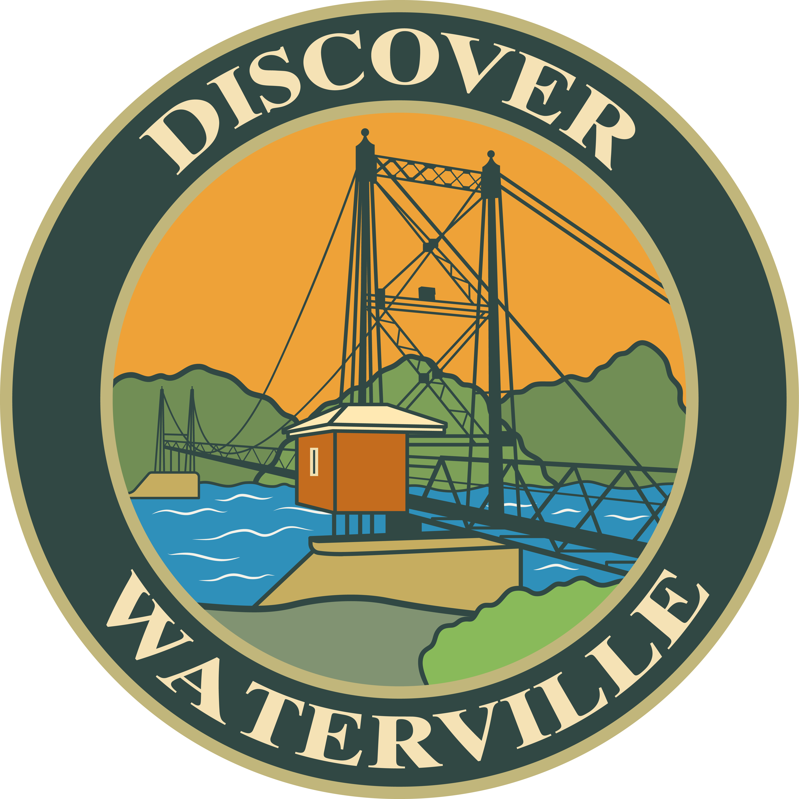
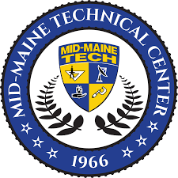

Discover Waterville
Media Executive Board Member
Discover Waterville ↗ 10thExperience
10thExperienceAbout Shawn Packard
From foster care to founding a business, Shawn’s journey has been one of perseverance, faith, and service. Growing up in foster homes across Maine gave him firsthand experience of the state’s youth system and a determination to improve it. Today he is a husband, father, community-minded entrepreneur, and advocate for Maine families.
Through grassroots involvement, he has shared everyday Mainers’ stories, supported small businesses, and volunteered in his community. His campaign centers on common sense, protecting children, and integrity in public service.
He supports foster-system reform, responsible stewardship of Maine’s resources, practical education, and compassionate, accountable responses to addiction and homelessness.
“I’m here to protect our kids, our communities, and our Maine values.” — Shawn P.Get in touch
Community first
Shawn has served alongside the AYCC, Discover Waterville, Mid-Maine Chamber of Commerce, and Mid-Maine Technical Center in support of local programs, businesses, and families.

Media Executive Board Member
Discover Waterville ↗Vice President for AYCC
Founders Club ↗
Former Advocacy Board Member